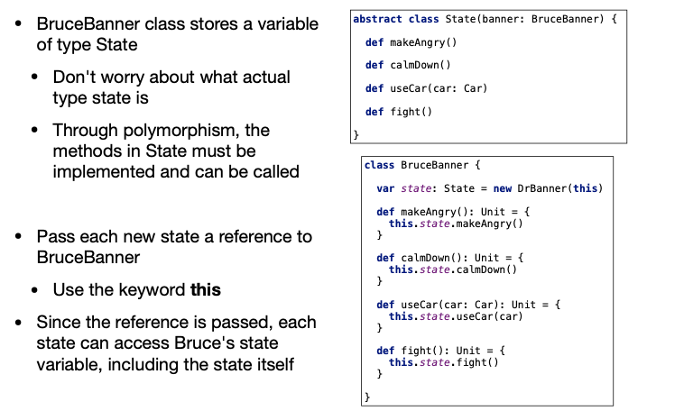
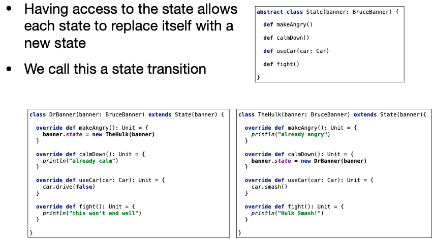
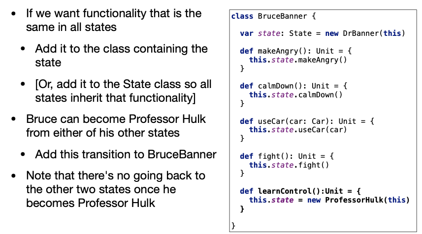
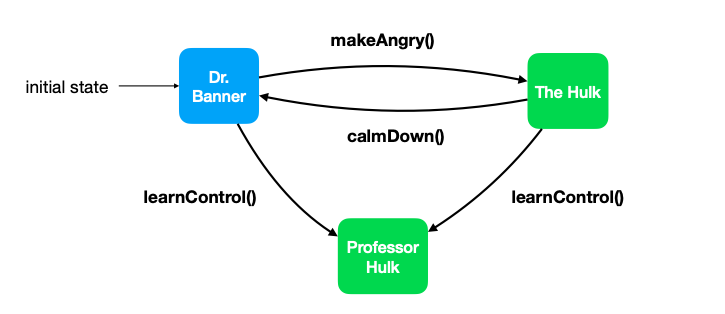
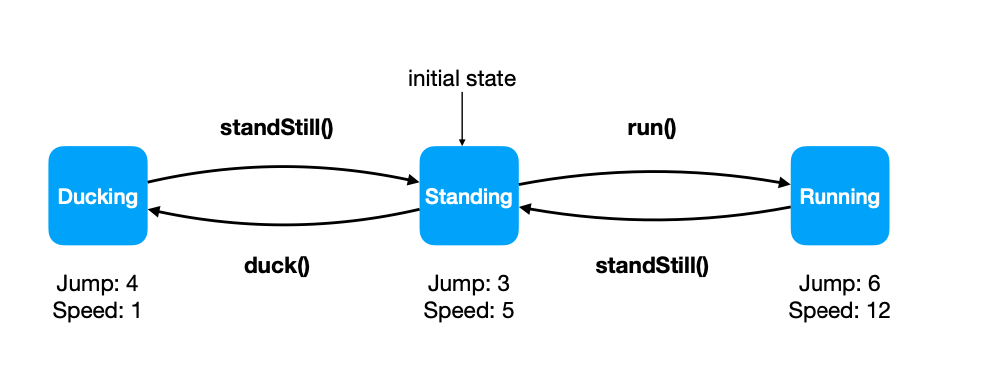

State Pattern
Design Patterns
Approaches to common programming design problems
There are many design patterns
- We’ll only focus on the state pattern in this course
- For more patterns, search “The Gang of Four”
The Primary goal of design patterns is to simplify the Design and Maintainability of our programs
Applies Polymorphism
Every object contains state and behavior
We use state variables to change the state of an object and its behavior can depend on this state
What if we want to significantly change the behavior of an object?
- Use if statements?
- if(condition){someBehavior()}
- else{completelyDifferentBehavior}
- This will work, but what about maintainability?
- Use if statements?
What if we want mant different behaviors?
if(condition){
someBehavior()
} else if(otherCondition1){
otherBehavior1()
} else if(otherCondition2){
otherBehavior2()
} else if(otherCondition3){
otherBehavior3()
} else {
completelyDifferentBehavior()
}This would all be in a single method
- Hard to read
- Hard to maintain
- Need to re-test existing functionality each time a condition is added
- Let’s try using the state pattern as an alternative
- Instead of storing each behavior in the same class, we defer functionality to a state object
- Have a state variable containing the current state as an object
- Change the state as needed
- Decisions made on type(Polymorphism) not value (Conditions)
- Modularizes code
- More, but smallerm pieces of functionality
- Easy to add new features without breaking tested features
- State is represented by an abstract class (or trait, interface)
- Defines the methods that can be called (API)
- Extend the state class for each concrete state
- One class for each possible state
- Each state will have a reference to the object to which it is attached
- Use this reference to access other state variables
- Use this reference to change state
State Pattern - Example
OK, but what does all that actually mean?
Let’s use the cool-headed Bruce Banner as an example
- Bruce is a world-class scientist
- Bruce can successfully drive a car
- Bruce is not very helpful in a fight
However, Make Bruce angry and he’ll become The Incredible Hulk!
- Smashes cars
- Great in a fight
- Out of control!
One man
Two significantly different behaviors depending on his current state
To simulate Bruce in a program, we will create one BruceBanner class containing the behavior in both states
Bruce Banner can use cars and fight very differently depending on his state
Defer to a State object to determine how he behaves
class BruceBanner {
var state: State = new DrBanner(this)
def makeAngry(): Unit = {
this.state.makeAngry()
}
def calmDown(): Unit = {
this.state.calmDown()
}
def useCar(car: Car): Unit = {
this.state.useCar(car)
}
def fight(): Unit = {
this.state.fight()
}
}Ceate State as an abstract class to define all the methods each state must contain(API)
Extend State for each possible concrete state
Implement the method for each state
abstract class State(banner: BruceBanner) {
def makeAngry()
def calmDown()
def yseCar(car: Car)
def fight()
}class BruceBanner {
var state: State = new DrBanner(this)
def makeAngry(): Unit = {
this.state.makeAngry()
}
def calmDown(): Unit = {
this.state.calmDown()
}
def useCar(car: Car): Unit = {
this.state.useCar(car)
}
def fight(): Unit = {
this.state.fight()
}
}class DrBanner(banner: BruceBanner) extends State(banner) {
override def makeAngry(): Unit = {
banner.state = new TheHulk(banner)
}
override def calmDown(): Unit = {
println("already calm")
}
override def useCar(car: Car): Unit = {
car.drive(false)
}
override def fight(): Unit = {
println("this won't end well")
}
}class TheHulk(banner: BruceBnner) extends State(banner) {
override def makeAngry(): Unit = {
println("already angry")
}
override def calmDown(): Unit = {
banner.state = new DrBanner(banner)
}
override def useCar(car: Car): Unit = {
car.smash()
}
override def fight(): Unit = {
println("Hulk Smash!")
}
}
With two states we could have easily used a single conditional and a boolean flag to store the state
- Arguably simpler than using the state pattern
The true power of this pattern comes when we have more states
Meet Professor Hulk
Bruce Banner transformed as the Hulk with full control
- Can drive a car and is great in a fight
To add the new state
- Create a new class and implement the State methods
- Add a state transition to enter the new state
Did not modify any existing functionality!
class BruceBanner { |
class ProfessorHulk(banner: BruceBanner) extends State(banner) { |

- State Diagrams
- Visualize states and state transitions
- Very helpful while designing with the state pattern
- The state diagram for Bruch Banner is as follows

State Pattern - Design
- Write your API
- What methods will change behavior depending on the current state of the obeject
- Theses methods define your API and are declared in the State class
- Decide what states should exist
- Any situation where the behavior is different should be a new state
- Determine the transitions between states
Lecture Question
No Control Flow allowed for this lecture question! - Same rules as the Calculator/Microwave HW
We will simulate some character behavior in a platforming game where the player can run, duck, and stand still
- In a package named oop.platformer write a class named Player with the following functionality
Methods:
- duck(): Unit
- Enters the ducking state. Cannot transition from running to ducking
- standStill(): Unit
- Enters the standing state
- run(): Unit
- Enters the running state. Cannot transition from ducking to running
- jumpHeight(): Int
- Returns 4 if ducking, 3 if standing, and 6 if running
- movementSpeed(): Int
- Returns 1 if ducking, 5 if standing, and 12 if running
The initial state of the Player is standing. The Player constructor takes no parameters
Test
- In the tests package, write a test suite named TestPlayer that will test all this functionality.
- Note: Only call the API methods while testing. Other methods/variables you create will not exist in the grader submissions
You cannot have any control flow in the code you submit, including your tests. If you have all your lecture questions in a single project, make sure you only submit your code for this LQ
To complete this lecture question you are strongly encouraged to use the state pattern. It is possible to use different approaches, though using the state pattern will give you more practice for the HW

Note: You may have to start a new project for this question. Any control flow in your zip file will cause an error even if it’s in an unrelated package